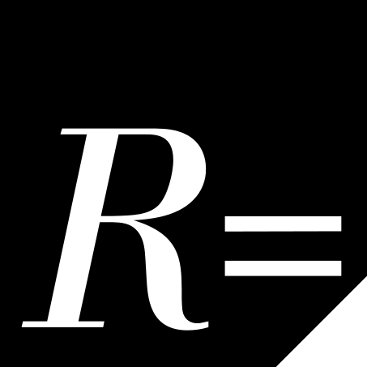
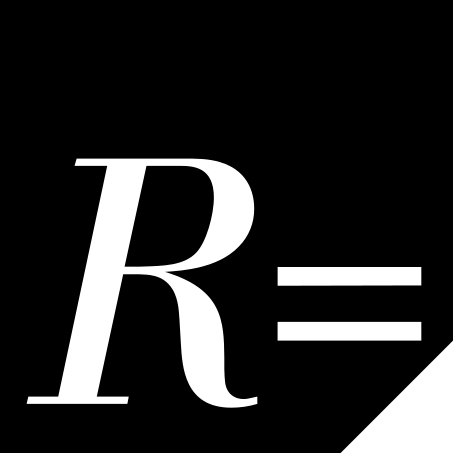

doi: 10.53962/kxj5-gs
Created on 2023-08-01.
Last updated on 2023-08-01.
We collect all mentions, discussions, and otherwise referential comments of ResearchEquals in the literature here. This in an attempt to keep track of the ever evolving discussions around our impact on how to publish research, and whether we can learn something from it.
This collection is actively inviting submissions if you see any mentions in the literature. The standard to accepting it for the collection is that the research output mentions ResearchEquals!
PubCasts: Putting Voice in Scholarly Work and Science Communication
doi: 10.1177/10755470231186397
Our partners from PubCast mention our collaboration to make publishing podcasts easier 🌟